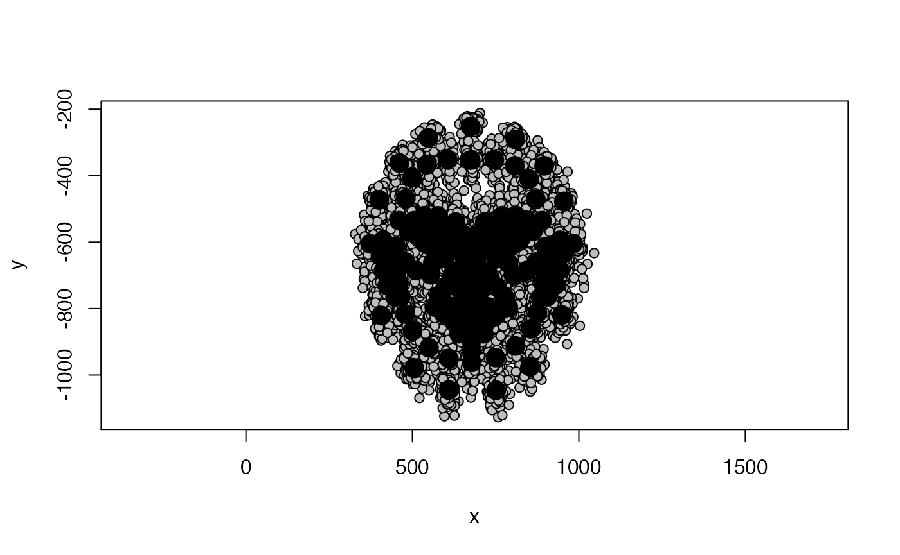
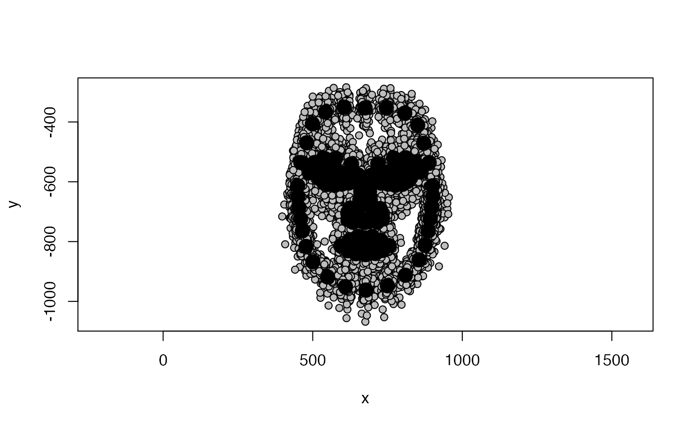

WORK IN PROGRESS
This package contains convenience functions for doing shape analyses of 2D and 3D face images in R (see also here), as well as tutorials for some common analyses: calculating sexual dimorphism, facial similarity and averageness, and asymmetry.
The following tutorial will provide a brief guide to loading 2D face data into R, Procrustes-aligning landmark templates and conducting a principal component analysis of shape using the package geomorph. It will conclude by introducing the function facefuns::facefuns, which will automatically conduct these steps and create outputs for use in subsequent analyses.
read_lmdata
Steps for importing your delineated landmark templates into R will vary depending on the software you used to delineate and the R package(s) you want to use.
For this tutorial, we will work with the CC-BY licensed Face Research London Set. This is a set of 102 faces that were delineated with the standard Face Research Lab (FRL) template of 189 points.
We will use facefuns::read_lmdata to read the template files.
path_to_tem <- system.file("extdata", "tem", package="facefuns")
data <- read_lmdata(lmdata = path_to_tem)
As you can see, read_shapedata will by default plot the loaded data. Use plot = FALSE to turn off plotting.
You might not want to retain all of the standard template’s 189 landmarks for shape analyses. For this example, we will remove the following landmarks:
| Landmarks | Number |
|---|---|
| Under eye | 44-49 |
| Lower lip | 99-103 |
| Ears | 115-124 |
| Halo | 145-157 |
| Smile lines | 158-163 |
| Cheeks | 164-169 |
| Philtrum | 170-173 |
| Chin | 174-178 |
| Neck | 183-184 |
We can define which landmarks to exclude by creating a vector that contains the number of every landmark to be deleted. Note that Webmorph starts counting at 0 - you will have to add +1 to each landmark!
If deleting multiple landmarks, it’s easier to save them all into a vector; for the current example, this would look like:
remove_points <- c(45:50, 100:104, 116:125, 146:158, 159:164, 165:170, 171:174, 175:179, 184:185)Let’s read in the template files again, but this time we will remove the points we decided to eliminate:
data <- read_lmdata(lmdata = path_to_tem,
remove_points = remove_points)
The black dots show the sample average, the gray points represent individual faces. As you can see, there is a lot of “noise” in the individual data - some of this variation will be due to
differences in the size of delineated faces, e.g., some peoples’ faces might just be genuinely bigger, but it could also they were slightly closer to the camera;
their position on screen, e.g., some people’s faces might have been a bit more in the center of the captured image than others;
and their rotation, e.g., some people might have been tilting their face slightly to the left or right
We are not interested in that sort of variation, but seek to eliminate it - Generalized Procrustes Analysis does exactly that!
GPA
We’ll use geomporph::gpagen to Procrustes-align our data. Check out help(gpagen) for details and plenty of references!
data_gpa <- gpagen(data, print.progress = FALSE)The aligned coordinates are stored in data_gpa$coords. Let’s plot one of the aligned faces.
plot(data_gpa$coords[, , 1], asp = 1)The GPA will sometimes rotate landmark templates, but this can be easily fixed by rotating them back into the right position.
data_aligned <- rotate.coords(data_gpa$coords,
type = "rotateC")
plot(data_aligned[, , 1], asp = 1)Better. Let’s have another look at the whole sample again.
plotAllSpecimens(data_aligned)Much less messy! What we are left with after the GPA is actual shape data - data that is free of variation due to differences in size, location and orientation between individual subjects.
Shape PCA
You might want to explore which shape dimensions explain the most variance in your data. Or, you might just be keen to get out principal component scores for each face for use in subsequent analyses.
The geomorph function for conducting a shape PCA is gm.prcomp:
pca_output <- gm.prcomp(data_aligned)
# summary(pca_output)summary(pca_output) will return a list of all principal components. That is usually not what we want. Instead, we will use facefuns::select_pcs to decide which PCs we would like to retain for subsequent analyses.
london_pcs <- select_pcs(pca_output)select_pcs returns a list of principal components as chosen by one of three methods. It defaults to the most conservative “broken_stick” method. Other methods are “Kaiser_Guttman” (retains PCs with eigenvalues greater than the mean eigenvalue) and “total_variance” (retains PCs explaining at least total_var variance). It returns three items: the number of selected PCs (london_pcs$n), their importance (london_pcs$selected) and the criterion that was used to choose PCs (london_pcs$method). The London Set has 8 selected PCs; the first three PCs explain 36.2%, 11.1% and 6.7% of variance, respectively.
london_pcs$selected
#> SD Variance Cum Var
#> PC1 0.046 0.362 0.362
#> PC2 0.026 0.111 0.474
#> PC3 0.020 0.067 0.541
#> PC4 0.018 0.058 0.599
#> PC5 0.018 0.056 0.655
#> PC6 0.017 0.050 0.705
#> PC7 0.014 0.033 0.739
#> PC8 0.013 0.027 0.766The principal component scores for each face are stored in pca_output$x. To save them for any subsequent analyses you might want to do, we could use the following code:
LondonSet_scores <- pca_output$x %>%
as_tibble() %>%
# tidy colnames
rename_with(~gsub("Comp", "PC", .x)) %>%
# re-add IDs
tibble::add_column(.before = 1,
id = gsub("^ID=", "", dimnames(data)[[3]])) %>%
tibble::column_to_rownames(var = "id") %>%
dplyr::select(1:(london_pcs$n + 1))What do the shape PCs for the London Set look like? You can use geomorph::plotRefToTarget function to visualize differences, e.g., between the average face and the sample min and max values on individual PCs.
We will first define the reference face (here, the sample average) and then plot the difference to the sample min and max on PC1.
ref <- mshape(data_aligned)
plotRefToTarget(ref, pca_output$shapes$shapes.comp1$min)
plotRefToTarget(ref, pca_output$shapes$shapes.comp1$max)
facefuns
facefuns is a convenience function for doing all of the above in one step.
shapedata <- facefuns(data = data,
pc_criterion = "broken_stick",
plot_sample = TRUE,
auto_rotate = TRUE,
quiet = FALSE)
#> The loaded data set contains 102 specimen, delineated with 132 2-D landmarks.
#> The broken_stick criterion was used to select 8 principal components.
#> Templates were rotated using "rotateC" after the GPA.facefuns returns a list with the following elements:
-
array: Procrustes-aligned data as three-dimensional array
-
matrix: Procrustes-aligned data as two-dimensional matrix [MAKE OPTIONAL?]
-
average: sample average
-
pc_info:-
selected: contains elementsSD,Variance, andCum Var -
n: number of selected PCs -
method: criterion used to select PCs
-
-
pc_scores: principal component scores
-
pc_plot: PCs for plotting -
summary: List of key descriptives
plot_2dpcs
By default, facefuns will create all selected PCs at plus and minus 3 standard deviations. These can again be plotted using plotRefToTarget or using plot_2dpcs. Note that while plotRefToTarget is based on the sample range of a specific PC, plot_2dpcs is based on units of standard deviation (see also help(plot_2dpcs)).
plot_2dpcs(input = shapedata$pc_plot,
ref = shapedata$average,
which_pcs = 1:2)